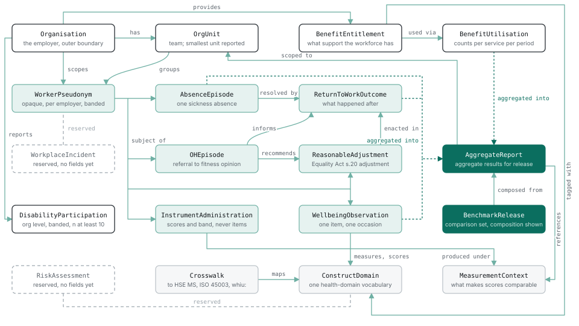

The draft specification
OWHS v0.2 draft · prose CC-BY 4.0, schemas and codelists Apache 2.0 · published for review
Read it below, or take it with you:
Specification as markdown (95 KB) · Complete bundle (376 KB zip: specification with its entity diagram, sixteen JSON schemas with valid and invalid conformance examples, 27 versioned codelists, the reference validator, the measurement-bundle and entity-graph checkers, the profile envelope, governance and decision log)
This is the current draft (v0.2). The previous draft, v0.1, remains available: page, markdown, bundle.
Tell us where it breaks against your data: hello@openworkplacehealth.org. A report of a failed mapping is worth as much to us as a successful one.
Open Workplace Health Standard (OWHS) v0.2, draft specification
Status: design draft for discussion · UK English · normative artefact is plain JSON Schema (Draft 2020-12) · FHIR profiles are a stated v1.x direction. This document is the schema design responding to the OWHS v0.1 scope draft; it takes the scope draft's six design principles as fixed constraints and does not restate them. Spec text is offered CC-BY 4.0; schemas, examples and validator Apache-2.0.
What is machine-checked in this draft. Version 0.2 provides executable Draft 2020-12 schemas for sixteen entity types. The validation report records the schema version and the expected and observed errors for each example. The reference validator checks the declared structure, asserted formats, generic extensions, explicitly supplied profiles and named within-record rules. The measurement-bundle checker adds its documented supplied-context joins. These checks do not establish full Level 2 or Level 3 conformance, external terminology resolution, lawful processing, safe disclosure or scientific validity. The separate entity-graph envelope and G01-G10 relationship checks are documented in the supplied-entity graph guide (docs/entity-graph-validation-v0.2.md).
Primary-source anchors (every definitional choice cites one): sickness-absence semantics, 7.5-hour day and reason taxonomy → ONS, Sickness absence in the UK labour market: 2025 [1][10][26]; psychosocial domains → HSE Management Standards six domains [19] + MSIT [17]; RTW adjustment vocabulary → Statement of Fitness for Work (fit note) "may be fit" categories; statutory benefit entitlement → Statutory Sick Pay (SSP); reasonable adjustments → Equality Act 2010 s.20; optional clinical coding → SNOMED CT (affiliate-licence caveat, never conformance-required); reserved national definitions → Workplace Health Intelligence Unit (WHIU) whiu: namespace [31][34]. No licensed instrument item text is reproduced anywhere in this standard.
A standing choice, stated once: where elegance and SME-implementability conflict, this draft chooses SME-implementability and says so at the point of choice (most visibly in the pseudonymisation design, §2f, and the strict-closure schema, §3.1.6).
An open invitation, stated once: the two domains where OWHS invents most, return-to-work outcomes and disability participation, are offered as good-faith strawmen, not settled designs. The people best placed to break them are insurer vocational-rehabilitation and analytics teams, occupational-health providers, disability-data specialists, and in time the WHIU itself. Comment on these two constructs is explicitly invited and will be weighted accordingly; both carry reserved whiu: escape hatches, so adopting a better definition is a code-list revision, not a schema break.
Contents
- Scope and domain coverage (carried from v0.1)
- Entity catalogue
- The privacy profile (normative)
- Field tables, entity by entity (generated from the schemas)
- Code lists
- JSON Schemas and validation
- The profile mechanism
- Identifiers and pseudonymisation
- Conformance levels
- The honesty pass Sources
1. Scope and domain coverage
This sweep enumerates the workplace-health data a UK SME could hold or need, beyond the entities already in the scope draft, and routes each domain to one of four homes: core v0.1 (vendor-neutral, every broker/HRIS/OH provider recognises it), a named profile (real but specialised or vendor-shaped), a reserved entity (too central to omit, too undefined to model now), or out of scope for v0.1. The full routing table is not included in this release; the reasoning and the two genuinely hard calls follow.
1.1 Routing summary
| Domain | SME prevalence | Privacy | Route | Home |
|---|---|---|---|---|
| Occupational-health referral & assessment | common | high | core v0.1 | OHEpisode |
| Fitness-for-work opinion | common | high | core v0.1 | OHEpisode.opinion |
| Reasonable adjustments (Equality Act 2010) | common | high | core v0.1 | ReasonableAdjustment |
| EAP / counselling provision & utilisation | common | med to high | core v0.1 | BenefitEntitlement / BenefitUtilisation |
| Wellbeing interventions + outcomes | common | low to med | core v0.1 | BenefitEntitlement + AggregateReport |
| Ill-health retirement / medical capability exit | occasional | high | core v0.1 | ReturnToWorkOutcome value |
| Psychosocial risk assessment (HSE MS / ISO 45003) | common | low | core v0.1 | Crosswalk + reserved RiskAssessment |
| Statutory health surveillance (COSHH/Noise/HAVS…) | niche | high | named profile | owhs-ohsurveillance |
| MSK / physiotherapy pathway | common | med | named profile | owhs-msk |
| Occupational immunisation / pre-placement screening | niche | high | named profile | owhs-ohsurveillance |
| DSE / workstation assessment | common | low | reserved entity | RiskAssessment |
| Accident / injury record & RIDDOR reportability | common | med | reserved entity | WorkplaceIncident |
| Vaccinations & health checks (general) | niche | high | out of scope | |
| Drug & alcohol testing | niche | high | out of scope | |
| Flexible-working requests (statutory) | common | low | out of scope | |
| Absence triggers / Bradford-factor scoring | common | med | out of scope | |
| First-aid provision & needs assessment | universal | low | out of scope |
1.2 Occupational health: why OHEpisode is core, and its shape
Occupational health is the domain the brief singles out, and rightly: OH data sits closer to a clinical record than anything already in scope, which is exactly why its shape has to be argued rather than assumed.
Why core, not a profile. An SME does not run a standing OH department; it buys OH ad hoc for precisely the cases the rest of the standard is about, a long-term absence that needs a fitness opinion before return, a disability that needs adjustments recommending, a manager who needs to know whether an employee can safely do a task. The OH referral and its resulting fitness-for-work opinion are the operational hinge between AbsenceEpisode, ReturnToWorkOutcome and ReasonableAdjustment. A competitor OH provider, an HRIS with an OH-referral module, and an insurer's rehabilitation service would all recognise "referral → assessment → fitness opinion → recommendations" as their concept. That passes the litmus test for core.
What core deliberately excludes. Everything that makes OH clinical stays out: no diagnosis, no history, no test results, no report narrative. OHEpisode models the management-facing envelope of an OH interaction, that a referral happened, why (from a controlled reason list), what assessment type occurred, and the categorical fitness opinion and recommendation types, not the clinical content the OH clinician holds under medical confidentiality. The distinction mirrors real UK practice: under the Access to Medical Reports Act 1988 and GMC guidance the OH physician's report goes to the worker first and to the employer only with consent, and the employer legitimately receives the opinion and recommendations, not the clinical detail. The schema encodes only what the employer is already entitled to hold.
The privacy problem OH forces, and the resolution. The scope draft's privacy profile is aggregate-first: employer-visible values must clear an n≥5 floor. But a fitness-for-work opinion is intrinsically individual and legitimately employer-visible, a manager must know this named worker may return on altered hours. An aggregate-only rule would make the entity useless, yet dropping the floor would breach the profile. The resolution is a fourth visibility class, individual-employer, defined narrowly: a value an employer may hold about an identifiable worker only where an independent legal basis already entitles them to it (statutory adjustment duty, an OH opinion the worker's report has released, a return-to-work plan the worker is party to). It is not a licence to hold clinical data; it is an honest acknowledgement that adjustments and fitness opinions are individual by nature and were never aggregate. Every individual-employer field is enumerated in the privacy profile and is the only class exempt from the aggregation floor, and note that within an OWHS payload the "identifiable worker" is still a WorkerPseudonym, never a direct identifier. This is the single most disputable decision in the design and is carried into the honesty pass (the honesty pass (section 10)) unsmoothed.
1.3 The other calls, briefly
- Reasonable adjustments → core. The Equality Act 2010 duty to make reasonable adjustments binds employers of any size; adjustments are the connective tissue between disability participation and RTW. Modelling them as a first-class
ReasonableAdjustmententity (rather than a flag on RTW) lets a standing adjustment (e.g. a permanent equipment change) exist independently of any absence. Individual-employer visibility, same basis as OH. - EAP, counselling, wellbeing interventions → existing benefit entities. These are services; provision is a
BenefitEntitlementwith an EAP/intervention product category and a health-domain tag, and uptake isBenefitUtilisationaggregate counts. No new entity, and individual counselling attendance stays firmlyindividual-never. - Ill-health retirement / medical capability exit → an RTW value, not an entity. Adding
ill-health-exitas adid-not-returnsubtype stops medical exits from disappearing into an undifferentiated "did not return", which matters for the disability-participation picture. - Statutory health surveillance, occupational immunisation, MSK pathway → named profiles. Real, but either sector-mandated for exposures most office SMEs never have (surveillance, immunisation) or vendor-shaped in its detail (MSK triage tiers). Profiles keep the core uncluttered; a 12-person marketing agency implements none of them.
- DSE assessment, accident/RIDDOR record → reserved entities. DSE is near-universal but is a workstation risk-assessment artefact; a RIDDOR-reportable injury already surfaces via the work-relatedness flag on
AbsenceEpisode, and a full incident record duplicates the employer's separate statutory report to HSE. ReserveRiskAssessmentandWorkplaceIncidentas names, model neither in v0.1. - Vaccinations/health checks, drug & alcohol testing, flexible-working requests, Bradford-factor triggers, first aid → out of scope. Each is either a clinical event inviting diagnosis semantics, a near-forensic sector process, an HR-admin flow, derived management logic, or facilities compliance, none is an SME workplace-health record that a national benchmark needs, and several carry privacy risk with no offsetting benchmarking value. Where a health consequence exists it already surfaces elsewhere (a health-driven flexible-working change is a
ReasonableAdjustment; a testing-related absence is just anAbsenceEpisode).
Net effect on the entity set: two new core entities (OHEpisode, ReasonableAdjustment), one new RTW outcome value (ill-health-exit), two reserved entities (RiskAssessment, WorkplaceIncident), and two named profiles (owhs-ohsurveillance, owhs-msk) alongside the steward's own profile already anticipated by the scope draft.
2. Entity catalogue
Sixteen entities in five clusters, plus two reserved names and one code-list-backed shared entity; in v0.2 every one of the sixteen has an executable schema (section 6). New in v0.1 relative to the scope draft: OHEpisode, ReasonableAdjustment (both core), ConstructDomain promoted to an explicit shared entity, and the reserved RiskAssessment / WorkplaceIncident. Cardinalities read "parent : child".
Identity cluster
| Entity | Purpose | Cardinality | Key relationships |
|---|---|---|---|
Organisation |
The employer; the outer boundary of every pseudonym scope. | root | 1:N OrgUnit, 1:N WorkerPseudonym, 1:N BenefitEntitlement, 1:N DisabilityParticipation |
OrgUnit |
Team/department; the smallest unit an aggregate may describe. | Organisation 1:N | parent-ref self-join; scopes AggregateReport |
WorkerPseudonym |
Opaque, per-employer person reference carrying banded demographics only, never a direct identifier. | Organisation 1:N | subject of all individual-level records |
Measurement cluster
| Entity | Purpose | Cardinality | Key relationships |
|---|---|---|---|
WellbeingObservation |
One answer to one survey item on one occasion, any vendor. | WorkerPseudonym 1:N | → ConstructDomain, → MeasurementContext |
InstrumentAdministration |
One completed validated instrument (scores + band, never item text). | WorkerPseudonym 1:N | → ConstructDomain, → MeasurementContext |
MeasurementContext |
What makes scores comparable: producing system, scoring descriptor, window, limitations. | referenced N:1 | referenced by observations, administrations, reports |
Absence, RTW & occupational-health cluster
| Entity | Purpose | Cardinality | Key relationships |
|---|---|---|---|
AbsenceEpisode |
One episode of sickness absence, ONS-comparable. | WorkerPseudonym 1:N | 1:0..1 ReturnToWorkOutcome |
ReturnToWorkOutcome |
What happened after an absence (incl. did-not-return / ill-health-exit). |
AbsenceEpisode 1:0..1 | informed by OHEpisode, enacted via ReasonableAdjustment |
OHEpisode |
Management-facing envelope of an OH referral → assessment → fitness opinion (no clinical content). | WorkerPseudonym 1:N | recommends ReasonableAdjustment, informs ReturnToWorkOutcome |
ReasonableAdjustment |
A workplace adjustment (Equality Act 2010 s.20 duty), standing or absence-linked. | WorkerPseudonym 1:N | recommended by OHEpisode, enacted in ReturnToWorkOutcome |
Benefits cluster
| Entity | Purpose | Cardinality | Key relationships |
|---|---|---|---|
BenefitEntitlement |
What support the workforce has: statutory (SSP) + commercial (product category). | Organisation 1:N | N:M ConstructDomain (health-domain tags) |
BenefitUtilisation |
Aggregate usage/claims counts per service per period, never individual claims. | BenefitEntitlement 1:N | aggregated into AggregateReport |
Disability participation
| Entity | Purpose | Cardinality | Key relationships |
|---|---|---|---|
DisabilityParticipation |
Reserved WHIU third metric; aggregate-only, org level, banded counts, n≥10 floor, minimal until the WHIU defines its measure. | Organisation 1:N |
Reporting cluster
| Entity | Purpose | Cardinality | Key relationships |
|---|---|---|---|
AggregateReport |
The only way individual-level results leave an org: level, n, completion, value+interval, suppression metadata. | OrgUnit N:1 | ← all aggregable entities; → MeasurementContext |
BenchmarkRelease |
A published comparison set with composition disclosure and leave-one-out flag. | N:M AggregateReport |
|
Crosswalk |
Construct → HSE MS domain → ISO 45003 clause → whiu: reserved mapping; versioned independently. |
maps ConstructDomain |
Shared & reserved
| Entity | Purpose | Status |
|---|---|---|
ConstructDomain |
The single health-domain vocabulary used by both measurement (what a survey measures) and services (what a benefit targets). | Code-list-backed shared entity |
RiskAssessment |
Reserved name for HSE-MS/ISO-45003/DSE assessment events. | Reserved, no fields in v0.1 or v0.2 |
WorkplaceIncident |
Reserved name for accident/RIDDOR records. | Reserved, no fields in v0.1 or v0.2 |
Entity-relationship diagram
The Mermaid source is owhs_erd_v0.1.mmd (renders natively in GitHub/Markdown); a static render is below. Solid lines are structural references; dotted lines are the aggregation flow into AggregateReport; dashed outlines are reserved names.

Figure, the OWHS entity map as drawn for v0.1. Version 0.2 adds no entity and removes none; the field-level references are in the section 4 tables. White boxes are organisation-level entities; tinted boxes are individual-level records held against the pseudonym; filled boxes are the outputs that leave; grey boxes are shared definitions; dashed outlines are reserved names.
3. The privacy profile (normative)
Restated here because §2b field tables reference it on every row. The scope draft's P1 to P5 stand; this draft adds the fourth visibility class made necessary by occupational health and adjustments (§1.2).
- P1, no direct identifiers in an OWHS payload; pseudonymous IDs and banded demographics only. All sixteen v0.2 entity types have executable schemas. Closed core objects reject undeclared property names, while extension objects apply the documented recursive named-key restriction. These rules cannot detect identifiers or sensitive meaning hidden in permitted values or aliases. Metadata is not automatically non-personal, and a structural pass is not a privacy-profile assessment. Producers MUST NOT place identifiers in free-text values, and that obligation is part of Level 3.
- P2, aggregation floors: employer-visible aggregates require n≥5, or n≥10 for severe-distress measures. Below the applicable floor a conformant producer emits suppression metadata instead of the value; it refuses to emit, not merely hides. The enumerated
individual-employerfields are exempt under the independent-legal-basis condition below. - P3, visibility is a field-level property with four classes:
open/aggregate-only/individual-employer/individual-never. All instrument results areindividual-neverby definition. - P4, safeguarding-category signals (bullying, harassment, discrimination, crisis) are excluded from employer-visible outputs entirely, at any n.
- P5, completeness travels: every aggregate carries its completion rate and suppression metadata.
The fourth class, individual-employer, applies only to fields an employer may lawfully hold about an identified pseudonym under an independent legal basis (Equality Act adjustment duty; a released OH opinion; an RTW plan the worker is party to). It is the only class exempt from the aggregation floor, is exhaustively enumerated in §2b, and never carries clinical content. The n≥5/n≥10 floors adopt commonly used conventions from UK official-statistics disclosure control (small cells suppressed, higher floors for sensitive measures); exact implementations vary across ONS and HSE outputs, sometimes with additional perturbation or dominance rules, so OWHS fixes these thresholds by convention rather than claiming to mirror any single official implementation.
4. Field tables, entity by entity
Generated from the sixteen executable v0.2 schemas: a row exists because the schema declares the field, Req is the schema's required, and a code-list column names the pinned list. Privacy classes are carried from the v0.1 tables for the fields that existed there and are not invented for any other field: a field without an explicit class reads not separately assigned; entity restrictions apply, and a nested field shows its nearest assigned parent's class marked as inherited. Anchors are carried from the v0.1 tables or, for fields added or redefined in v0.2, are the schema's description or the stated design choice. Nested objects are shown as parent.child; ext (the extension object keyed by profile namespace, section 7) is present on every entity and omitted from the rows.
An unassigned field has no separate disclosure permission. The whole record remains subject to its entity boundary and the privacy profile. An open metadata field does not make a linked individual record publishable. A nested field without its own class shows its nearest assigned parent's class, marked as inherited; a nested field under an unassigned parent is itself unassigned.
Privacy classification (four classes). open = may appear in any output; aggregate-only = employer-visible only through an AggregateReport clearing the n-floor; individual-never = never leaves the producer at individual grain in any output, even to the employer; individual-employer = may be held or shown about an identified pseudonym to the employer only where an independent legal basis entitles them. A class is a field-level obligation on the producer; the schema does not enforce it.
Organisation (new in v0.2)
Organisation scope and declared employee-count band. Not a statutory company-size determination, identity verification or disclosure assessment.
| Field | Type | Req | Code list | Privacy | Anchor or description |
|---|---|---|---|---|---|
orgId |
string (pattern) | yes | open | OWHS internal | |
companiesHouseNumber |
string | no | open | Companies House | |
sicCode |
string (pattern) | no | open | ONS SIC 2007 (sector comparability) | |
sicVersion |
const 2007 |
no | not separately assigned; entity restrictions apply | UK SIC 2007 retained as an edition; ONS also publishes SIC 2026 | |
sizeBand |
string (code) | yes | codelist:org-size-band@0.1.1 | open | Employee-count bands informed by DBT business population statistics; not a Companies Act company-size classification |
sizeBandReferenceDate |
date | yes | not separately assigned; entity restrictions apply | OWHS v0.2 design choice: the date the band relates to | |
country |
string (pattern) | yes | open | UK-first; structure allows extension |
sicCode and sicVersion require one another; the only permitted version is 2007, retained as an edition (section 5).
OrgUnit (new in v0.2)
Organisation-scoped unit and declared headcount band. No zero band exists in the pinned vocabulary; unknown or zero is not 1-4. References and hierarchy need supplied-bundle checks.
| Field | Type | Req | Code list | Privacy | Anchor or description |
|---|---|---|---|---|---|
unitId |
string (pattern) | yes | open | OWHS internal | |
orgId |
string (pattern) | yes | open | → Organisation | |
parentUnitId |
string (pattern) | no | open | self-join | |
headcountBand |
string (code) | yes | codelist:headcount-band@0.1.0 | open | banded, never exact (small-cell control) |
headcountReferenceDate |
date | yes | not separately assigned; entity restrictions apply | OWHS v0.2 design choice |
WorkerPseudonym (new in v0.2)
Organisation-scoped pseudonym with optional banded demographics. Syntax does not prove HMAC generation, salt custody, anonymity or permission to disclose demographics.
| Field | Type | Req | Code list | Privacy | Anchor or description |
|---|---|---|---|---|---|
pseudonymId |
string (pattern) | yes | open | §2f pseudonymisation design | |
orgId |
string (pattern) | yes | open | scope boundary | |
unitId |
string (pattern) | no | open | → OrgUnit | |
ageBand |
string (code) | no | codelist:age-band@0.1.0 | aggregate-only | banded demographic (ONS age groups) |
tenureBand |
string (code) | no | codelist:tenure-band@0.1.0 | aggregate-only | banded demographic |
workPattern |
string (code) | no | codelist:work-pattern@0.1.0 | aggregate-only | full/part-time (ONS employment-type dimension) |
The five forbidden root identifier names (name, nino, email, dateOfBirth, address) fail the closed root; inside ext they fail the recursive named-key rule (section 7). No raw age, birth date, tenure number or person name is carried.
AbsenceEpisode
Reported sickness-absence episode with versioned reason-category mapping. No direct identifiers.
| Field | Type | Req | Code list | Privacy | Anchor or description |
|---|---|---|---|---|---|
episodeId |
string | yes | open | OWHS internal | |
pseudonymId |
string (pattern) | yes | individual-employer | employer holds absence records lawfully | |
reasonCode |
string (code) | yes | codelist:absence-reason@0.2.0. | aggregate-only | ONS reason taxonomy [1] |
startDate |
date | yes | individual-employer | OWHS v0.2 design choice | |
endDate |
date | no | individual-employer | open episode if absent | |
workingDaysLost |
number | no | aggregate-only | ONS 7.5-hour working-day unit [26] | |
workingHoursLost |
number | no | aggregate-only | ONS hours-based rate basis [1][10] | |
fitNoteFlag |
boolean | no | individual-employer | fit note issued (Statement of Fitness for Work) | |
workRelatedFlag |
boolean | no | aggregate-only | work-relatedness (feeds RIDDOR context) | |
clinicalCauseCode |
string (pattern) | no | individual-never | OPTIONAL; affiliate-licence caveat, never conformance-required | |
sourceProvenance |
object | yes | open | HRIS provider / manual | |
sourceProvenance.sourceType |
string (code) | yes | codelist:source-type@0.1.0 | inherited: open (from sourceProvenance) |
OWHS record provenance |
sourceProvenance.sourceProvider |
string | no | inherited: open (from sourceProvenance) |
||
sourceProvenance.sourceId |
string | no | inherited: open (from sourceProvenance) |
ReturnToWorkOutcome
What happened after an absence, including did-not-return and ill-health-exit. No direct identifiers.
| Field | Type | Req | Code list | Privacy | Anchor or description |
|---|---|---|---|---|---|
outcomeId |
string | yes | open | OWHS internal | |
absenceEpisodeId |
string | yes | individual-employer | → AbsenceEpisode | |
pseudonymId |
string (pattern) | yes | individual-employer | OWHS v0.2 design choice | |
outcomeType |
string (code) | yes | codelist:rtw-outcome@0.1.0 | aggregate-only | full / phased / adjusted / did-not-return / ill-health-exit |
adjustmentTypes |
array of string codes | no | codelist:rtw-adjustment@0.1.0 | individual-employer | fit-note "may be fit" categories |
rtwDate |
date | no | individual-employer | OWHS v0.2 design choice | |
sustainedAt |
array of object | no | codelist:rtw-sustained-status@0.1.0 (element status; the checkpoint weeks are advisory rtw-checkpoint@0.1.0) | aggregate-only | any 1 to 104 weeks; {4,13,26} recommended, provisional pending whiu: |
sustainedAt[].checkpointWeeks |
integer | yes | codelist:rtw-checkpoint@0.1.0 | inherited: aggregate-only (from sustainedAt) |
Founder decision 7 Jul 2026: open integer, not enum. Recommended set {4,13,26} (codelist:rtw-checkpoint@0.1.0); producers SHOULD use the recommended set for comparability. whiu: definitions expected to supersede. |
sustainedAt[].status |
string (code) | yes | codelist:rtw-sustained-status@0.1.0 | inherited: aggregate-only (from sustainedAt) |
closed vocabulary; unknown means the checkpoint was not followed up, which is not a relapse |
whiuOutcomeCode |
string (pattern) | no | aggregate-only | reserved for WHIU crosswalk |
OHEpisode
Management-facing envelope of an OH interaction. Carries NO clinical content.
| Field | Type | Req | Code list | Privacy | Anchor or description |
|---|---|---|---|---|---|
ohEpisodeId |
string | yes | open | OWHS internal | |
pseudonymId |
string (pattern) | yes | individual-employer | OWHS v0.2 design choice | |
referralReason |
string (code) | yes | codelist:oh-referral-reason@0.1.0 | individual-employer | management-facing reason, not diagnosis |
referralDate |
date | yes | individual-employer | OWHS v0.2 design choice | |
assessmentType |
string (code) | no | codelist:oh-assessment-type@0.1.0 | individual-employer | management referral / health surveillance / DSE / pre-placement |
assessmentDate |
date | no | individual-employer | OWHS v0.2 design choice | |
fitnessOpinion |
string (code) | no | codelist:fitness-opinion@0.1.0 | individual-employer | fit / unfit / fit-with-adjustments (the released opinion, per AMRA 1988 / GMC) |
recommendationTypes |
array of string codes | no | codelist:rtw-adjustment@0.1.0 | individual-employer | recommendation types only, shared with RTW adjustments |
opinionReleasedToEmployer |
boolean | yes | open | consent flag; MUST be true for fitnessOpinion to be present |
|
linkedAbsenceEpisodeId |
string | no | individual-employer | → AbsenceEpisode |
ReasonableAdjustment (new in v0.2)
Management-facing adjustment record, with sensitive disability flag restricted to the producer. Omitted endDate means no end date is recorded; null is not a date. A recorded category does not decide any legal duty or lawful disclosure.
| Field | Type | Req | Code list | Privacy | Anchor or description |
|---|---|---|---|---|---|
adjustmentId |
string (pattern) | yes | open | OWHS internal | |
orgId |
string (pattern) | yes | not separately assigned; entity restrictions apply | OWHS v0.2 design choice | |
pseudonymId |
string (pattern) | yes | individual-employer | OWHS v0.2 design choice | |
adjustmentCategory |
string (code) | yes | codelist:adjustment-category@0.1.0 | individual-employer | Equality Act 2010 s.20 duty; superset of fit-note categories |
status |
string (code) | yes | codelist:adjustment-status@0.1.0 | aggregate-only | proposed / in-place / declined / ended |
startDate |
date | no | individual-employer | OWHS v0.2 design choice | |
endDate |
date | no | individual-employer | Omit when no end date is recorded; null is invalid. Use status for adjustment state. | |
sourceOhEpisodeId |
string (pattern) | no | individual-employer | → OHEpisode (if OH-recommended) | |
disabilityRelated |
boolean | no | individual-never | whether tied to a disability, sensitive; aggregate via DisabilityParticipation only |
Omit endDate when no end date is recorded; null is not a date. An omitted end date does not by itself show that the adjustment is in place; status is the separate record of that.
WellbeingObservation
One answer to one survey item on one occasion, any vendor. Individual-never at this grain: it leaves an organisation only through an AggregateReport.
| Field | Type | Req | Code list | Privacy | Anchor or description |
|---|---|---|---|---|---|
observationId |
string (pattern) | yes | open | Primary identifier, unique within the organisation. | |
orgId |
string (pattern) | yes | not separately assigned; entity restrictions apply | Organisation scope. Metadata remains subject to P1. | |
pseudonymId |
string (pattern) | yes | individual-never | survey answers never individually employer-visible | |
contextId |
string (pattern) | yes | not separately assigned; entity restrictions apply | Same-organisation MeasurementContext reference; one immutable scoring and interpretation descriptor. | |
itemId |
string (pattern) | yes | individual-never | item identifier only, never item text (licensing) | |
itemVersion |
string (pattern) | yes | not separately assigned; entity restrictions apply | Version of this item and its response options. | |
constructCode |
string (code) | yes | codelist:construct-domain@0.1.0 | aggregate-only | shared construct list |
nativeValue |
number | yes | individual-never | vendor scale | |
normalisedValue |
number | no | aggregate-only | comparability | |
occasionTs |
date-time | yes | individual-never | Observation occasion, with an asserted time zone. | |
collectionChannel |
string (code) | no | codelist:collection-channel@0.1.0 | open | How the answer was collected. |
safeguardingCategory |
boolean | yes | individual-never | if true, excluded from all employer output at any n (§3 P4) | |
samplingDesign |
object | no | open | complete / rotating-subset / adaptive + schedule ref | |
samplingDesign.design |
string (code) | yes | codelist:sampling-design@0.1.0 | inherited: open (from samplingDesign) |
Sampling design under which this item was offered. |
samplingDesign.scheduleRef |
string (pattern) | no | inherited: open (from samplingDesign) |
Schedule reference, required for rotating-subset and adaptive designs. |
InstrumentAdministration
One completed, partial or abandoned administration of a validated instrument: scores and bands, never item text. Individual-never at this grain. The schema does not grant a licence to administer the instrument.
| Field | Type | Req | Code list | Privacy | Anchor or description |
|---|---|---|---|---|---|
administrationId |
string (pattern) | yes | open | Primary identifier, unique within the organisation. | |
orgId |
string (pattern) | yes | not separately assigned; entity restrictions apply | Organisation scope. | |
pseudonymId |
string (pattern) | yes | individual-never | instrument results are individual-never by definition (§3 P3) | |
contextId |
string (pattern) | yes | not separately assigned; entity restrictions apply | Same-organisation MeasurementContext reference. | |
instrumentId |
string (pattern) | yes | not separately assigned; entity restrictions apply | Stable identifier of the exact instrument or form. Not its registry grade. | |
instrumentCitation |
string | yes | open | citation + version only, never item text | |
instrumentVersion |
string (pattern) | yes | open | Form or version, separate from any dataset version. | |
occasionTs |
date-time | yes | not separately assigned; entity restrictions apply | Administration occasion, with an asserted time zone. | |
constructCodes |
array of string codes | yes | codelist:construct-domain@0.1.0 | not separately assigned; entity restrictions apply | Constructs the instrument measures; a multidimensional instrument lists several without inventing one total construct. |
completionStatus |
string (code) | yes | codelist:completion-status@0.1.0 | open | complete, partial or abandoned. |
totalScore |
number | no | individual-never | Total score, where the instrument defines one. | |
subscaleScores |
object | no | individual-never | Subscale identifier to finite score. | |
band |
string (pattern) | no | aggregate-only | producer's published banding | |
aboveThresholdFlag |
boolean | no | individual-never | severe-distress → n≥10 aggregation floor (§3 P2) |
MeasurementContext
What makes scores comparable: the producing system, the scoring descriptor and its provenance, the data window it describes, and the stated limitations. Immutable: a changed descriptor is a new context.
| Field | Type | Req | Code list | Privacy | Anchor or description |
|---|---|---|---|---|---|
contextId |
string (pattern) | yes | open | Primary identifier, unique within the organisation. | |
orgId |
string (pattern) | yes | not separately assigned; entity restrictions apply | Organisation scope. | |
producingSystem |
string | yes | open | system + version | |
knownLimitations |
string | yes | open | OWHS v0.2 design choice | |
recallPeriod |
string | no | not separately assigned; entity restrictions apply | The instrument's recall period where its source specifies one, for example 'preceding two weeks'. Distinct from observationWindow. | |
scoringDescriptor |
object | yes | open | aggregation method / estimation family / window (open descriptor, no method enum) | |
scoringDescriptor.descriptorId |
string (pattern) | yes | inherited: open (from scoringDescriptor) |
Identifier of this descriptor. | |
scoringDescriptor.descriptorVersion |
string (pattern) | yes | inherited: open (from scoringDescriptor) |
Version of this descriptor. | |
scoringDescriptor.method |
string | yes | inherited: open (from scoringDescriptor) |
Scoring method, in the producer's words. | |
scoringDescriptor.estimand |
string | yes | inherited: open (from scoringDescriptor) |
What the score estimates: a period mean, a modelled current state, a rolling average with its window, and so on. | |
scoringDescriptor.observationWindow |
object | yes | inherited: open (from scoringDescriptor) |
The data the descriptor represents. Not the instrument's recall period. | |
scoringDescriptor.observationWindow.start |
date-time | yes | inherited: open (from scoringDescriptor) |
||
scoringDescriptor.observationWindow.end |
date-time | yes | inherited: open (from scoringDescriptor) |
||
scoringDescriptor.sourceRef |
string | yes | inherited: open (from scoringDescriptor) |
OWHS v0.2 design choice | |
scoringDescriptor.scoreUnit |
string | no | inherited: open (from scoringDescriptor) |
Unit of the score. | |
scoringDescriptor.higherScoreMeaning |
string (code) | no | inherited: open (from scoringDescriptor) |
||
scoringDescriptor.nativeScale |
object | no | inherited: open (from scoringDescriptor) |
Bounds of the native response scale. | |
scoringDescriptor.nativeScale.min |
number | yes | inherited: open (from scoringDescriptor) |
||
scoringDescriptor.nativeScale.max |
number | yes | inherited: open (from scoringDescriptor) |
||
scoringDescriptor.normalisation |
object | no | inherited: open (from scoringDescriptor) |
Rule that maps nativeValue to 0..100. Required by any observation carrying normalisedValue. | |
scoringDescriptor.normalisation.id |
string (pattern) | yes | inherited: open (from scoringDescriptor) |
Identifier of the rule or table. | |
scoringDescriptor.normalisation.version |
string (pattern) | yes | inherited: open (from scoringDescriptor) |
Version of the rule or table. | |
scoringDescriptor.normalisation.sourceRef |
string | yes | inherited: open (from scoringDescriptor) |
OWHS v0.2 design choice | |
scoringDescriptor.normalisation.description |
string | no | inherited: open (from scoringDescriptor) |
Optional description. | |
scoringDescriptor.banding |
object | no | inherited: open (from scoringDescriptor) |
Banding table. Required by any administration carrying band. | |
scoringDescriptor.banding.id |
string (pattern) | yes | inherited: open (from scoringDescriptor) |
Identifier of the rule or table. | |
scoringDescriptor.banding.version |
string (pattern) | yes | inherited: open (from scoringDescriptor) |
Version of the rule or table. | |
scoringDescriptor.banding.sourceRef |
string | yes | inherited: open (from scoringDescriptor) |
OWHS v0.2 design choice | |
scoringDescriptor.banding.description |
string | no | inherited: open (from scoringDescriptor) |
Optional description. | |
scoringDescriptor.threshold |
object | no | inherited: open (from scoringDescriptor) |
Threshold rule. Required by any administration carrying aboveThresholdFlag. | |
scoringDescriptor.threshold.id |
string (pattern) | yes | inherited: open (from scoringDescriptor) |
Identifier of the rule or table. | |
scoringDescriptor.threshold.version |
string (pattern) | yes | inherited: open (from scoringDescriptor) |
Version of the rule or table. | |
scoringDescriptor.threshold.sourceRef |
string | yes | inherited: open (from scoringDescriptor) |
OWHS v0.2 design choice | |
scoringDescriptor.threshold.description |
string | no | inherited: open (from scoringDescriptor) |
Optional description. | |
scoringDescriptor.missingResponseRule |
object | no | inherited: open (from scoringDescriptor) |
Scoring rule for partial administrations. Required by any partial administration carrying scores. | |
scoringDescriptor.missingResponseRule.id |
string (pattern) | yes | inherited: open (from scoringDescriptor) |
Identifier of the rule or table. | |
scoringDescriptor.missingResponseRule.version |
string (pattern) | yes | inherited: open (from scoringDescriptor) |
Version of the rule or table. | |
scoringDescriptor.missingResponseRule.sourceRef |
string | yes | inherited: open (from scoringDescriptor) |
OWHS v0.2 design choice | |
scoringDescriptor.missingResponseRule.description |
string | no | inherited: open (from scoringDescriptor) |
Optional description. |
BenefitEntitlement (new in v0.2)
Declared statutory scheme or commercial workforce benefit. No eligibility, rate or legal entitlement is computed. Statutory descriptions are dated and sourced; omitted optional terms are not zero.
| Field | Type | Req | Code list | Privacy | Anchor or description |
|---|---|---|---|---|---|
entitlementId |
string (pattern) | yes | open | OWHS v0.2 design choice | |
orgId |
string (pattern) | yes | open | OWHS v0.2 design choice | |
layer |
string (code) | yes | codelist:benefit-layer@0.1.0 | open | the statutory/commercial split |
statutory |
object | no | open | closed statutory-term object; dated and sourced; no rate or eligibility is computed | |
statutory.scheme |
string (pattern) | yes | inherited: open (from statutory) |
||
statutory.eligibility |
string | yes | inherited: open (from statutory) |
||
statutory.waitingDays |
integer | no | inherited: open (from statutory) |
||
statutory.rate |
object | no | inherited: open (from statutory) |
||
statutory.rate.amount |
number | yes | inherited: open (from statutory) |
||
statutory.rate.currency |
string (pattern) | yes | inherited: open (from statutory) |
ISO 4217 code syntax only; membership is not resolved. | |
statutory.rate.basis |
string | yes | inherited: open (from statutory) |
Rate period or other calculation basis, for example per week. A variable statutory formula must be stated in description, not replaced with a fictitious fixed rate. | |
statutory.rate.description |
string | no | inherited: open (from statutory) |
||
statutory.durationWeeks |
number | no | inherited: open (from statutory) |
||
statutory.sourceRef |
string | yes | inherited: open (from statutory) |
OWHS v0.2 design choice | |
statutory.asOfDate |
date | yes | inherited: open (from statutory) |
||
productCategory |
string (code) | no | codelist:benefit-product@0.1.0 | open | UK-market vocabulary (PMI/GIP/GLA/cash plan/EAP/pension) |
serviceName |
string | no | open | commercial layer | |
provider |
string | no | open | OWHS v0.2 design choice | |
accessRoute |
string (code) | no | codelist:access-route@0.1.0 | open | self-referral / manager / GP / OH |
eligibilityScope |
string | no | open | who is covered | |
healthDomainTags |
array of string codes | no | codelist:construct-domain@0.1.0 | open | maps services to the same constructs measurement uses |
A statutory layer requires the closed statutory object and forbids productCategory; a commercial layer requires productCategory and forbids statutory. Within statutory, waitingDays, rate and durationWeeks are optional: absence of a term is not zero, and a supplied fixed amount is not proof of legal entitlement.
BenefitUtilisation (new in v0.2)
Producer-held aggregate event counts. This is not an employer-output record: use an AggregateReport and the privacy profile for disclosure. Counts below a reporting floor can be structurally valid here. Claim contents and individual attendance are excluded.
| Field | Type | Req | Code list | Privacy | Anchor or description |
|---|---|---|---|---|---|
utilisationId |
string (pattern) | yes | open | OWHS v0.2 design choice | |
orgId |
string (pattern) | yes | not separately assigned; entity restrictions apply | OWHS v0.2 design choice | |
entitlementId |
string (pattern) | yes | open | OWHS v0.2 design choice | |
periodStart |
date | yes | open | OWHS v0.2 design choice: inclusive reporting dates | |
periodEnd |
date | yes | open | OWHS v0.2 design choice: inclusive reporting dates | |
usageCount |
integer | yes | aggregate-only | counts only, never individual claims | |
claimCount |
integer | no | aggregate-only | Claim events, never an individual claim record. Repeated claims may exceed n. | |
n |
integer | yes | open | distinct people represented across the recorded service-use and claim events in this period; not the whole eligible workforce and not automatically the denominator for either event category separately; a released metric requires its own distinct-person count and completion metadata in AggregateReport |
BenefitUtilisation is a producer-held aggregate input. Its event counts may exceed the number of people because a person may use a service repeatedly. Values below a reporting floor may be recorded internally. This entity does not by itself establish permission to disclose counts, service attendance or claims; employer-visible numerical results must use AggregateReport and satisfy the privacy profile. No individual claim record is permitted.
DisabilityParticipation (new in v0.2)
Reserved-minimal producer-held organisation aggregate. No disability measure or national definition is invented. The shape has no respondent denominator or suppression metadata: this schema cannot establish the n>=10 disclosure rule and does not authorise employer or benchmark release. Zero, unknown and non-disclosure must not be recoded into 1-4.
| Field | Type | Req | Code list | Privacy | Anchor or description |
|---|---|---|---|---|---|
reportId |
string (pattern) | yes | open | OWHS v0.2 design choice | |
orgId |
string (pattern) | yes | open | org level only | |
period |
string | yes | open | Human-readable period label; periodStart and periodEnd define the inclusive dates. | |
periodStart |
date | yes | not separately assigned; entity restrictions apply | OWHS v0.2 design choice: inclusive reporting dates | |
periodEnd |
date | yes | not separately assigned; entity restrictions apply | OWHS v0.2 design choice: inclusive reporting dates | |
disabledHeadcountBand |
string (code) | no | codelist:headcount-band@0.1.0 | aggregate-only | n≥10 floor; banded, minimal until whiu: defines the measure |
whiuMeasureCode |
string (pattern) | no | aggregate-only | reserved |
The executable schema validates this reserved-minimal record's structure and reporting dates. It does not contain a respondent denominator or suppression metadata and cannot verify the n>=10 disclosure requirement. A valid instance is not an employer-output or benchmark-release approval. Missing, zero and non-disclosure must not be recoded into an existing positive headcount band. Publication requires a governed measure definition and a release mechanism that can establish the applicable privacy conditions; neither is supplied by this placeholder.
AggregateReport
Employer-visible aggregate results and their suppression declarations. Structural consistency of declarations, not a disclosure assessment: the schema cannot know the recipient, and a safeguarding record valid as suppressed must still never enter employer output (P4).
| Field | Type | Req | Code list | Privacy | Anchor or description |
|---|---|---|---|---|---|
reportId |
string (pattern) | yes | open | Primary identifier, unique within the organisation. | |
orgId |
string (pattern) | yes | not separately assigned; entity restrictions apply | Organisation scope. | |
level |
string (code) | yes | open | OWHS v0.2 design choice | |
unitId |
string (pattern) | no | open | OrgUnit reference; required at unit level, forbidden at org level. | |
periodStart |
date | yes | not separately assigned; entity restrictions apply | OWHS v0.2 design choice: inclusive reporting dates | |
periodEnd |
date | yes | not separately assigned; entity restrictions apply | OWHS v0.2 design choice: inclusive reporting dates | |
n |
integer | yes | open | distinct people represented across the recorded service-use and claim events in this period; not the whole eligible workforce and not automatically the denominator for either event category separately; a released metric requires its own distinct-person count and completion metadata in AggregateReport | |
observationCount |
integer | no | not separately assigned; entity restrictions apply | Responses underlying the estimate; may exceed n with repeated observations. | |
headcount |
integer | yes | open | denominator | |
eligibleN |
integer | yes | not separately assigned; entity restrictions apply | Distinct people eligible or offered this metric in the window. | |
completionRate |
number/null | yes | open | P5 completeness travels with the aggregate | |
metricCode |
string (pattern) | yes | open | what is reported | |
measureKind |
string (code) | yes | not separately assigned; entity restrictions apply | Source grain, not a reliability claim. | |
releaseCategory |
string (code) | yes | not separately assigned; entity restrictions apply | OWHS P2/P4 declared category | |
value |
number | no | open (post-floor) | the aggregate value; required when suppressed:false, and MUST be absent when suppressed:true |
|
interval |
object | no | open | uncertainty; MUST be absent when suppressed:true, since an interval discloses the suppressed value to within its width |
|
interval.low |
number | yes | inherited: open (from interval) |
||
interval.high |
number | yes | inherited: open (from interval) |
||
interval.level |
number | yes | inherited: open (from interval) |
||
interval.method |
string | yes | inherited: open (from interval) |
Interval method. | |
interval.sourceRef |
string | no | inherited: open (from interval) |
OWHS v0.2 design choice | |
suppressed |
boolean | yes | open | P5 whether withheld | |
suppressionReason |
string (code) | no | codelist:suppression-reason@0.1.0 | open | below-floor / safeguarding / low-completion |
contextId |
string (pattern) | yes | open | → MeasurementContext | |
benchmarkRef |
object | no | not separately assigned; entity restrictions apply | Reference to a comparison release. No implied score equivalence. Not resolved by the core validator. | |
benchmarkRef.benchmarkId |
string (pattern) | yes | not separately assigned; entity restrictions apply | BenchmarkRelease identifier. | |
benchmarkRef.releaseVersion |
string (pattern) | yes | not separately assigned; entity restrictions apply | OWHS v0.2 design choice | |
benchmarkRef.sourceRef |
string | yes | not separately assigned; entity restrictions apply | OWHS v0.2 design choice |
BenchmarkRelease (new in v0.2)
One versioned comparison distribution for one declared metric, scoring rule, population and data period. Sample composition and exclusion are declarations, not verified truth. Percentiles do not establish representativeness, clinical thresholds, anonymity or comparability with a different measure.
| Field | Type | Req | Code list | Privacy | Anchor or description |
|---|---|---|---|---|---|
benchmarkId |
string (pattern) | yes | open | OWHS v0.2 design choice | |
releaseVersion |
string (pattern) | yes | not separately assigned; entity restrictions apply | OWHS v0.2 design choice | |
composition |
object | yes | open | composition disclosure | |
composition.orgCount |
integer | yes | inherited: open (from composition) |
||
composition.sectors |
array of patterned strings | yes | inherited: open (from composition) |
||
composition.sicVersion |
const 2007 |
yes | inherited: open (from composition) |
UK SIC 2007 retained as an edition; ONS also publishes SIC 2026 | |
composition.sizeBands |
array of string codes | yes | codelist:org-size-band@0.1.1 | inherited: open (from composition) |
|
composition.sampleSizes |
object | yes | inherited: open (from composition) |
||
composition.sampleSizes.people |
integer | yes | inherited: open (from composition) |
||
composition.sampleSizes.observations |
integer | no | inherited: open (from composition) |
||
percentiles |
object | yes | open | OWHS v0.2 design choice | |
percentiles.method |
string | yes | inherited: open (from percentiles) |
Published quantile algorithm, weighting and handling of ties/missing values. No universal quantile algorithm is presumed. | |
percentiles.values |
array of object | yes | inherited: open (from percentiles) |
||
percentiles.values[].probability |
number | yes | inherited: open (from percentiles) |
||
percentiles.values[].value |
number | yes | inherited: open (from percentiles) |
||
leaveOneOut |
boolean | yes | open | self-comparison honesty | |
excludedOrgId |
string (pattern) | no | not separately assigned; entity restrictions apply | OWHS v0.2 design choice: required iff leaveOneOut | |
validFrom |
date | yes | open | validity window | |
validTo |
date | yes | open | validity window | |
source |
string | yes | open | OWHS v0.2 design choice | |
dataPeriodStart |
date | yes | not separately assigned; entity restrictions apply | OWHS v0.2 design choice | |
dataPeriodEnd |
date | yes | not separately assigned; entity restrictions apply | OWHS v0.2 design choice | |
measure |
object | yes | not separately assigned; entity restrictions apply | OWHS v0.2 design choice: one metric and scoring rule per release | |
measure.metricCode |
string (pattern) | yes | not separately assigned; entity restrictions apply | ||
measure.instrumentId |
string (pattern) | no | not separately assigned; entity restrictions apply | ||
measure.instrumentVersion |
string (pattern) | no | not separately assigned; entity restrictions apply | ||
measure.scoreUnit |
string | yes | not separately assigned; entity restrictions apply | ||
measure.scoringDescriptorRef |
string | yes | not separately assigned; entity restrictions apply | ||
population |
string | yes | not separately assigned; entity restrictions apply | OWHS v0.2 design choice | |
samplingMethod |
string | yes | not separately assigned; entity restrictions apply | OWHS v0.2 design choice | |
knownLimitations |
string | yes | not separately assigned; entity restrictions apply | OWHS v0.2 design choice | |
releaseCategory |
string (code) | yes | codelist:release-category@0.1.0 | not separately assigned; entity restrictions apply | OWHS P2/P4 declared category |
A benchmark release identifies one metric, scoring rule, population and data period. Its sample sizes, composition, exclusion and quantiles are producer declarations. The validator checks their stated structure and internal consistency; it does not reconstruct the data, verify who was excluded, establish representativeness, validate clinical cut-points or prove that a recipient's measure is comparable. A leave-one-out release names the excluded organisation. Sharing a metric identifier or a numeric range does not establish measurement equivalence. Disclosure review, including composition and repeated-release risks, remains necessary.
Crosswalk (new in v0.2)
Versioned, sourced mapping assertions. At least one target is required; construct codes remain the shared vocabulary, not extra person-level entities.
| Field | Type | Req | Code list | Privacy | Anchor or description |
|---|---|---|---|---|---|
constructCode |
string (code) | yes | codelist:construct-domain@0.1.0 | open | codelist:construct-domain |
hseDomain |
string (code) | no | codelist:hse-management-domain@0.1.0 | open | HSE MS six domains [19] |
iso45003Clause |
string (pattern) | no | open | ISO 45003 hazard taxonomy | |
iso45003Edition |
string (pattern) | no | not separately assigned; entity restrictions apply | ISO 45003 edition being mapped; ISO text is referenced, not reproduced | |
whiuCode |
string (pattern) | no | open | reserved whiu: |
|
crosswalkVersion |
string (pattern) | yes | open | versioned independently of the spec | |
sourceRef |
string | yes | not separately assigned; entity restrictions apply | OWHS v0.2 design choice |
At least one of hseDomain, iso45003Clause and whiuCode is required; iso45003Clause and iso45003Edition require one another. Clause syntax is not clause existence or mapping validity; WHIU syntax is not resolved terminology.
5. Code lists
Every list is a standalone JSON file with its own version (semver), independent of the spec version, registered in _registry.json. Schemas pin a list as name@version. The registry holds 27 lists; archived versions live under codelists/archive/ and are never edited. Files: every list is in the download bundle (owhs-v0.2-bundle.zip) under codelists/.
| List | Ver | Values | Anchor |
|---|---|---|---|
absence-reason |
0.2.0 | 11 | ONS Sickness absence in the UK labour market, 2025 edition, Tables 4, 4a and 5, reason categories and non-disclosure response; published 1 May 2026. |
access-route |
0.1.0 | 5 | OWHS benefit access route |
adjustment-category |
0.1.0 | 9 | Equality Act 2010 s.20 duty; superset of fit-note categories |
adjustment-status |
0.1.0 | 4 | OWHS v0.1; reasonable-adjustment lifecycle status |
age-band |
0.1.0 | 5 | ONS-aligned age groups |
benefit-layer |
0.1.0 | 2 | OWHS benefit-layer distinction, specification section 4; a data-model convention. |
benefit-product |
0.1.0 | 10 | UK employee-benefits market vocabulary |
collection-channel |
0.1.0 | 5 | OWHS survey collection channel |
completion-status |
0.1.0 | 3 | OWHS instrument completion status |
construct-domain |
0.1.0 | 11 | Shared construct/health-domain list; HSE MS six domains [19] anchored, extended |
fitness-opinion |
0.1.0 | 4 | OH fitness-for-work opinion (management-facing categorical output) |
headcount-band |
0.1.0 | 7 | OWHS banded headcount (small-cell disclosure control) |
hse-management-domain |
0.1.0 | 6 | HSE Management Standards, six areas of work design. OWHS codes identify domains; a mapping is not a compliance certificate. |
oh-assessment-type |
0.1.0 | 5 | OWHS v0.1; OH assessment types |
oh-referral-reason |
0.1.0 | 9 | OWHS v0.1; management-facing OH referral reasons (non-diagnostic) |
org-size-band |
0.1.1 | 4 | Employee-count bands informed by DBT business population and small-business survey statistics; OWHS micro band includes zero employees. Not a Companies Act company-size classification. |
release-category |
0.1.0 | 3 | OWHS P2/P4 and the existing v0.2 AggregateReport declarations. A producer-declared classification, not an inferred clinical diagnosis. |
rtw-adjustment |
0.1.0 | 4 | Statement of Fitness for Work (fit note) 'may be fit' categories |
rtw-checkpoint |
0.1.0 | 3 | OWHS v0.1 RECOMMENDED set (schema takes open integer 1-104 per founder decision 7 Jul 2026); whiu: reserved |
rtw-outcome |
0.1.0 | 5 | OWHS v0.1; return-to-work outcome types (no UK incumbent) |
rtw-sustained-status |
0.1.0 | 3 | OWHS v0.1; sustained-return status at a checkpoint (no UK incumbent) |
safeguarding-category |
0.1.0 | 6 | OWHS v0.1 provisional; governance-owned; seeded from the steward's safeguarding taxonomy (categories only) |
sampling-design |
0.1.0 | 3 | OWHS sampling design descriptor |
source-type |
0.1.0 | 4 | OWHS record provenance |
suppression-reason |
0.1.0 | 3 | OWHS aggregate suppression reasons |
tenure-band |
0.1.0 | 5 | OWHS tenure bands |
work-pattern |
0.1.0 | 2 | ONS employment-type dimension |
These schemas retain UK SIC 2007 explicitly as an edition. ONS also publishes SIC 2026; codes from different editions must not be mixed or relabelled without an explicit mapping. Country, SIC, currency, ISO clause and reserved WHIU strings are checked only to the stated syntactic extent. They are not resolved against live external registers. The existing headcount bands have no zero/unknown category, and the existing tenure labels do not by themselves settle the shared ten-year boundary. No producer should infer an absent category or boundary rule from a structural pass.
6. JSON Schemas and validation
Each of the sixteen entity types in the v0.2 catalogue has an executable schema and passing and failing examples. The generated validation report identifies each entity and schema version and records its observed errors. C1-C18 are documented within-record checks implemented by the reference validator; they are not all JSON Schema keywords. ConstructDomain remains a code list. RiskAssessment and WorkplaceIncident remain reserved without executable schemas. DisabilityParticipation is an executable reserved-minimal shape with the stated disclosure limitations. The separate entity-graph envelope and G01-G10 relationship checks are documented in the supplied-entity graph guide (docs/entity-graph-validation-v0.2.md).
Schemas: schemas/v0.2/ (sixteen entity types, in the bundle and under this page's schemas/ directory) and schemas/catalogue.json; the three v0.1 entry points remain at schemas/<Entity>.json with byte-identical archived copies under schemas/v0.1/. Examples: examples/v0.2/ (in the bundle and under this page's examples/ directory). Report: examples/validation_report.json.
Privacy and boundary rules expressed in schema
- Direct-identifier ban (P1): Core schema validation checks declared property names, the documented recursive named-key restrictions in extensions, and each entity's identifier syntax. It cannot detect identifiers or sensitive meaning hidden in permitted values or aliases; a structural pass does not establish P1 compliance.
- Pseudonym shape: WorkerPseudonym, ReasonableAdjustment and the absence, RTW and OH records require the declared
owhs:pseudo:hexadecimal shape. The retained WellbeingObservation and InstrumentAdministration schemas accept opaque WorkerPseudonym references under their own identifier pattern. The core validator does not resolve those references or establish how any identifier was generated. Where a supplied entity graph is checked, its worker-reference rules provide the additional join. - Opaque identifiers: every new identifier field forbids whitespace explicitly and takes the shared identifier pattern.
- OH clinical-content boundary and consent gate; RTW semantic integrity: unchanged from v0.1.
- Layer branches:
BenefitEntitlementrequires the statutory object or the product category according tolayerand forbids the other;BenchmarkReleaserequiresexcludedOrgIdexactly whenleaveOneOutis true, applies declared sample floors of 5 (ordinary) and 10 (severe-distress) tosampleSizes.people, and admits nosafeguardingrelease at all. - Paired fields:
sicCodewithsicVersion;iso45003Clausewithiso45003Edition;instrumentIdwithinstrumentVersion.
Error map (generated from the validation report)
Every committed v0.2 example, with the errors the reference validator raised on it. A valid example raises none; an invalid one raises exactly the keywords or named rules listed. A [profile] note (an extension namespace whose profile semantics were not checked) is not an error and is not counted. The map is generated from examples/validation_report.json, so it cannot drift from the run.
| Entity | Example | Expected | Errors raised |
|---|---|---|---|
Organisation |
invalid |
fail | pattern, maxLength (2) |
Organisation |
valid |
pass | none (0) |
OrgUnit |
external-parent-not-resolved-here.valid |
pass | none (0) |
OrgUnit |
invalid |
fail | enum (1) |
OrgUnit |
self-parent.invalid |
fail | C18 (1) |
OrgUnit |
valid |
pass | none (0) |
WorkerPseudonym |
invalid |
fail | pattern (1) |
WorkerPseudonym |
valid |
pass | none (0) |
AbsenceEpisode |
ext-identifier-nested.invalid |
fail | anyOf (1) |
AbsenceEpisode |
ext-namespace.invalid |
fail | pattern (1) |
AbsenceEpisode |
ext-namespace.valid |
pass | none (0) |
AbsenceEpisode |
invalid |
fail | additionalProperties, required, pattern, enum (4) |
AbsenceEpisode |
new-reason.valid |
pass | none (0) |
AbsenceEpisode |
non-disclosure.valid |
pass | none (0) |
AbsenceEpisode |
unknown-reason.invalid |
fail | enum (1) |
AbsenceEpisode |
valid |
pass | none (0) |
ReturnToWorkOutcome |
invalid |
fail | not (1) |
ReturnToWorkOutcome |
valid |
pass | none (0) |
OHEpisode |
ext-clinical-key.invalid |
fail | not (1) |
OHEpisode |
invalid |
fail | additionalProperties, not, const (3) |
OHEpisode |
valid |
pass | none (0) |
ReasonableAdjustment |
equal-c10.valid |
pass | none (0) |
ReasonableAdjustment |
invalid |
fail | enum (1) |
ReasonableAdjustment |
reversed-c10.invalid |
fail | C10 (1) |
ReasonableAdjustment |
valid |
pass | none (0) |
WellbeingObservation |
invalid |
fail | required, required, maximum, format, pattern, required (6) |
WellbeingObservation |
valid |
pass | none (0) |
InstrumentAdministration |
abandoned-with-score.invalid |
fail | not (1) |
InstrumentAdministration |
complete-without-score.invalid |
fail | anyOf (1) |
InstrumentAdministration |
invalid |
fail | minItems, not (2) |
InstrumentAdministration |
subscales-only.valid |
pass | none (0) |
InstrumentAdministration |
valid |
pass | none (0) |
MeasurementContext |
equal-instants-different-offsets.valid |
pass | none (0) |
MeasurementContext |
valid |
pass | none (0) |
MeasurementContext |
window-and-scale.invalid |
fail | C4, C5 (2) |
BenefitEntitlement |
invalid |
fail | not (1) |
BenefitEntitlement |
valid |
pass | none (0) |
BenefitUtilisation |
c15-0-0-0.valid |
pass | none (0) |
BenefitUtilisation |
c15-0-1-0.invalid |
fail | C15 (1) |
BenefitUtilisation |
c15-1-0-0.invalid |
fail | C15 (1) |
BenefitUtilisation |
c15-1-0-1.valid |
pass | none (0) |
BenefitUtilisation |
c15-2-1-1.valid |
pass | none (0) |
BenefitUtilisation |
c15-2-100-50.valid |
pass | none (0) |
BenefitUtilisation |
c15-3-1-1.invalid |
fail | C15 (1) |
BenefitUtilisation |
equal-c11.valid |
pass | none (0) |
BenefitUtilisation |
invalid |
fail | minimum (1) |
BenefitUtilisation |
reversed-c11.invalid |
fail | C11 (1) |
BenefitUtilisation |
valid |
pass | none (0) |
DisabilityParticipation |
equal-c12.valid |
pass | none (0) |
DisabilityParticipation |
invalid |
fail | enum (1) |
DisabilityParticipation |
reversed-c12.invalid |
fail | C12 (1) |
DisabilityParticipation |
valid |
pass | none (0) |
AggregateReport |
benchmark-scalar.invalid |
fail | type (1) |
AggregateReport |
n-above-eligible.invalid |
fail | maximum, C7 (2) |
AggregateReport |
n4-unsuppressed.invalid |
fail | const (1) |
AggregateReport |
observations-below-n.invalid |
fail | C8 (1) |
AggregateReport |
org-level-with-unit.invalid |
fail | not (1) |
AggregateReport |
period-reversed.invalid |
fail | C3 (1) |
AggregateReport |
rate-wrong.invalid |
fail | C9 (1) |
AggregateReport |
safeguarding-n100-unsuppressed.invalid |
fail | const (1) |
AggregateReport |
severe-n10.valid |
pass | none (0) |
AggregateReport |
severe-n9-unsuppressed.invalid |
fail | const (1) |
AggregateReport |
suppressed-below-floor.valid |
pass | none (0) |
AggregateReport |
suppressed-with-value.invalid |
fail | not (1) |
AggregateReport |
valid |
pass | none (0) |
AggregateReport |
zero-eligible.valid |
pass | none (0) |
BenchmarkRelease |
c16-3-30-90.valid |
pass | none (0) |
BenchmarkRelease |
c16-5-5-4.invalid |
fail | C16 (1) |
BenchmarkRelease |
c16-5-5-5.valid |
pass | none (0) |
BenchmarkRelease |
c16-6-5-5.invalid |
fail | C16 (1) |
BenchmarkRelease |
duplicate-probability.invalid |
fail | C17 (1) |
BenchmarkRelease |
equal-c13.valid |
pass | none (0) |
BenchmarkRelease |
equal-c14.valid |
pass | none (0) |
BenchmarkRelease |
invalid |
fail | required (1) |
BenchmarkRelease |
inverted-values.invalid |
fail | C17 (1) |
BenchmarkRelease |
reversed-c13.invalid |
fail | C13 (1) |
BenchmarkRelease |
reversed-c14.invalid |
fail | C14 (1) |
BenchmarkRelease |
single-quantile.valid |
pass | none (0) |
BenchmarkRelease |
tied-values.valid |
pass | none (0) |
BenchmarkRelease |
valid |
pass | none (0) |
Crosswalk |
invalid |
fail | enum (1) |
Crosswalk |
valid |
pass | none (0) |
Named within-record rules
| Rule | Entity | Predicate |
|---|---|---|
| C1 | AbsenceEpisode |
endDate not before startDate |
| C2 | OHEpisode |
assessmentDate not before referralDate |
| C3 | AggregateReport |
periodEnd not before periodStart |
| C4 | MeasurementContext |
observationWindow ordered as UTC instants |
| C5 | MeasurementContext |
nativeScale min below max |
| C6 | AggregateReport |
interval low not above high |
| C7 | AggregateReport |
n <= eligibleN <= headcount |
| C8 | AggregateReport |
observationCount not below n |
| C9 | AggregateReport |
completionRate is n/eligibleN, null only when eligibleN is 0 |
| C10 | ReasonableAdjustment |
if both dates exist, endDate >= startDate |
| C11 | BenefitUtilisation |
periodEnd >= periodStart |
| C12 | DisabilityParticipation |
periodEnd >= periodStart |
| C13 | BenchmarkRelease |
validTo >= validFrom |
| C14 | BenchmarkRelease |
dataPeriodEnd >= dataPeriodStart |
| C15 | BenefitUtilisation |
n <= usageCount + claimCount (an absent claimCount contributes no recorded events); n = 0 requires both recorded event counts to be zero. Repeated events may exceed n. Declarations are compared; people are not deduplicated |
| C16 | BenchmarkRelease |
composition.orgCount <= sampleSizes.people; observations, when supplied, >= people. Contributing organisations and people, not invited but non-contributing units |
| C17 | BenchmarkRelease |
percentile probabilities strictly increase in array order and values never decrease; tied values and a single quantile are valid, duplicate probabilities are not; no quantile algorithm or sampling distribution is verified |
| C18 | OrgUnit |
parentUnitId, if supplied, differs from unitId; the direct self-loop only |
Rules run only after the entity's structural operands are valid; a malformed date is the format check's finding, and a negative count the schema's. Malformed inputs yield named validation or tool errors, never a traceback. Cross-record joins (organisation hierarchies beyond the direct self-loop, references to other entities, benchmark applicability) are not within-record rules and are outside this validator; the optional entity-graph checker covers them on a supplied bundle (G01-G10, docs/entity-graph-validation-v0.2.md).
7. The profile mechanism
OWHS follows the FHIR profiling pattern: a vendor profile constrains and extends the core, but may never contradict it. The core spec is the interoperability contract; a profile is a labelled overlay that a consumer can ignore and still read the core fields.
Naming and namespacing. A profile has a reverse-DNS-free short id, owhs-<slug> (e.g. owhs-msk, owhs-ohsurveillance). Profile-specific fields are carried under a single reserved object, ext, keyed by profile id:
{ "episodeId": "...", "reasonCode": "musculoskeletal",
"ext": { "owhs-msk": { "surveillanceWave": 3 } } }Every core permits the generic ext object. Its namespace syntax, object shape and recursive named-key restrictions are checked without a profile. An explicitly supplied matching profile adds its own constraints and is reported with its version and envelope hash. Unchecked extension namespaces are reported as having profile semantics not checked. A core pass does not establish that an omitted profile's semantics hold. A consumer that does not understand owhs-msk drops ext.owhs-msk and still has a conformant core record.
What a profile MAY do: add fields under its ext key; narrow a core field (tighten a maxLength, restrict an enum to a subset, make a core-optional field required within the profile); add profile-scoped code lists; bind a core code-list field to a profile-specific value set that is a subset of the core list.
What a profile MUST NOT do: widen a core constraint (add enum values to a core list, relax a required, remove additionalProperties:false); change a field's type or meaning; change a field's privacy classification to something more permissive (a profile can make an open field individual-never, never the reverse); override any privacy-profile MUST (aggregation floors, identifier ban, safeguarding exclusion); or place any field outside ext that is not defined in core. A profile that needs a new top-level field is a core change request (RFC), not a profile.
The steward's own profile, the worked example of extensibility, lives entirely under its ext key: its sampling design, scoring specifics and construct sub-taxonomy, none of which the core presumes. It doubles as the conformance test for the mechanism: if the steward's product can be expressed without touching core, the boundary is drawn correctly.
8. Identifiers and pseudonymisation
Requirement. Records for one worker must link within an employer, never across employers, and never back to identity from an OWHS payload alone, and an SME with no data team must be able to implement it.
Issue. For each worker, the pseudonym is a keyed hash:
pseudonymId = "owhs:pseudo:" + HMAC-SHA256( key = orgSalt , msg = stableWorkerKey )[:32 hex]
stableWorkerKeyis any stable internal reference the employer already holds (payroll id, HRIS row id). It never leaves the producer.orgSaltis a 256-bit secret generated per organisation and held only by the producer (the SME's HRIS/broker, or a one-line script for a manual SME). It is never transmitted in any OWHS payload.- The output is truncated to 32 hex chars, matching the
^owhs:pseudo:[0-9a-f]{16,64}$schema pattern.
Scoping, why cross-employer linkage is structurally impossible. Because the salt is per-org and secret, the same person at two employers produces two unrelated pseudonyms; there is no shared key any party could use to join them. The employer boundary is enforced by not possessing the means to cross it, not by policy. This is deliberately at odds with what the WHIU might eventually want (a person-level national view), see the honesty pass.
Rotation. Salts rotate on a governance-set cadence (default: annually, and on any suspected key compromise). Rotation breaks longitudinal linkage by design, so a producer that needs within-org trend continuity across a rotation publishes a one-way rotation map inside the producer (old→new pseudonym) and never in an OWHS payload; the map is itself keyed and destroyed at end of retention. For most SMEs the pragmatic default is no rotation within a reporting year and re-issue at year boundaries, accepting that cross-year individual linkage is intentionally lost, trend lives at the aggregate level, which does not need stable individual ids. This is a deliberate constraint, not an oversight: OWHS restricts person-level longitudinal linkage to reduce re-identification risk, and accepts that multi-year individual analyses (repeat absence, chronic-condition trajectories) are out of scope for OWHS payloads. Insurers or large employers who legitimately need individual trajectories should maintain their own internal, non-OWHS identifiers inside their governed environments; OWHS is the exchange format, not the case-management store.
No reverse path, and the stated consequence of salt compromise. HMAC is one-way; without orgSalt and stableWorkerKey the pseudonym cannot be reversed, and neither input appears in any payload. Stated plainly: if orgSalt is compromised, an attacker who also holds the HRIS worker keys can re-compute every pseudonym in that organisation and join them to OWHS payloads. The identifier ban limits what such a join reveals, and the blast radius is one organisation, but salt custody (§3.3) is therefore a real control, not a formality. A recipient (benchmark operator, the WHIU) receives pseudonyms and bands only, and can link within an org-scoped dataset but cannot re-identify or cross-link.
SME implementability (the explicit trade-off). A cryptographically ideal design would use per-worker salts in an HSM. That is not implementable by a 12-person company, so OWHS chooses one secret salt per org + a standard HMAC, weaker than per-worker salting but implementable as a single environment variable and a library call, and sufficient given that direct identifiers are banned and demographics are banded. We choose SME-implementability over cryptographic elegance and say so.
9. Conformance levels
Three cumulative levels. A producer declares the highest level it meets; a consumer states the minimum it requires. Each level runs every check of the levels below it.
Level 1, Schema-valid
Structural conformance to the Draft 2020-12 schemas.
- Every entity instance validates against its schema (additionalProperties:false, required fields, types, patterns), with every format asserted. In Draft 2020-12 format is an annotation unless a validator is told to assert it, so a validator that does not assert it accepts any string where a date is declared. A conformance claim at this level requires the assertion.
- Direct-identifier ban (P1): Core schema validation checks declared property names, the documented recursive named-key restrictions in extensions, and each entity's identifier syntax. It cannot detect identifiers or sensitive meaning hidden in permitted values or aliases; a structural pass does not establish P1 compliance.
- Cross-field structural rules the schema encodes fire: OH clinical-content boundary, OH consent gate, RTW did-not-return-vs-adjustments rule.
- The named cross-field rules below fire. JSON Schema compares an instance against a schema and never one field of an instance against another, so an ordering rule between two dates cannot be expressed in it. These rules are implemented in the reference validator and each has an instance in examples/.
| Rule | Entity | Statement |
|---|---|---|
| C1 | AbsenceEpisode |
endDate not before startDate |
| C2 | OHEpisode |
assessmentDate not before referralDate |
| C3 | AggregateReport |
periodEnd not before periodStart |
| C4 | MeasurementContext |
observationWindow ordered as UTC instants |
| C5 | MeasurementContext |
nativeScale min below max |
| C6 | AggregateReport |
interval low not above high |
| C7 | AggregateReport |
n <= eligibleN <= headcount |
| C8 | AggregateReport |
observationCount not below n |
| C9 | AggregateReport |
completionRate is n/eligibleN, null only when eligibleN is 0 |
| C10 | ReasonableAdjustment |
if both dates exist, endDate >= startDate |
| C11 | BenefitUtilisation |
periodEnd >= periodStart |
| C12 | DisabilityParticipation |
periodEnd >= periodStart |
| C13 | BenchmarkRelease |
validTo >= validFrom |
| C14 | BenchmarkRelease |
dataPeriodEnd >= dataPeriodStart |
| C15 | BenefitUtilisation |
n <= usageCount + claimCount (an absent claimCount contributes no recorded events); n = 0 requires both recorded event counts to be zero. Repeated events may exceed n. Declarations are compared; people are not deduplicated |
| C16 | BenchmarkRelease |
composition.orgCount <= sampleSizes.people; observations, when supplied, >= people. Contributing organisations and people, not invited but non-contributing units |
| C17 | BenchmarkRelease |
percentile probabilities strictly increase in array order and values never decrease; tied values and a single quantile are valid, duplicate probabilities are not; no quantile algorithm or sampling distribution is verified |
| C18 | OrgUnit |
parentUnitId, if supplied, differs from unitId; the direct self-loop only |
- What the validators do not establish: the validators enforce their pinned inline values and the declared structural aggregation and suppression conditions. They do not establish that an external terminology is current, that the submitted counts are true, or that an output is safe to disclose. Code-list and generator gates verify only their documented version and consistency contracts.
Level 2, +Code lists
Level 1, plus every coded field resolves to a current code-list version.
- Each codelist:<name> field value exists in the pinned name@version in the registry.
- whiu: and SNOMED values are well-formed (namespace/pattern) but not resolved against external registries (SNOMED is optional and licence-gated; whiu: is reserved and not yet published).
- Cross-record date sanity runs here, where a second record is needed to judge the first: rtwDate ≥ the linked absencestartDate``. The within-record date rules are C1 and C2 at Level 1, because they need nothing beyond the instance.
Level 3, +Privacy profile
Level 2, plus the normative privacy MUSTs, the level that makes a payload safe to emit.
- Aggregation floor: employer-visible aggregates are delivered through an AggregateReport with n≥5, or n≥10 for severe-distress measures. Below the applicable floor the producer MUST emit suppressed:true with a suppressionReason and omit the value. The individual-employer fields enumerated in section 3 are exempt from aggregation floors only under that section's independent-legal-basis condition.
- Safeguarding exclusion (P4): any record with safeguardingCategory:true (or a safeguarding-tagged construct) is absent from every employer-visible output at any n.
- Visibility classes (P3): no individual-never field value appears at individual grain in any output; individual-employer fields appear only where the declared legal basis is present.
- Completeness travels (P5): every AggregateReport carries completionRate, suppressed, and (where applicable) suppressionReason.
- Refuse, don't hide: a Level-3 producer that cannot satisfy a floor MUST refuse to emit the offending value (suppression is emitting metadata about a withholding, which is permitted and required; emitting the raw sub-floor value is non-conformant).
The reference validator implements Level 1 today, including the format assertion and the named within-record rules C1 to C18 (section 6). Levels 2 and 3 are specified as the checks a full validator adds, and are cross-record or payload-level rather than per-instance, which is why they are conformance levels and not schema keywords. No tool in this repository verifies Level 2 or Level 3.
Three parts of Level 3 are not verifiable from payloads at all, and are audit obligations. They are stated here rather than left to be inferred, because a reader could otherwise take a Level 3 declaration to mean more than it can mean.
- A recipient cannot verify
n. Every floor check compares a value against a respondent count the producer supplied. A recipient can check that a report is internally consistent with thenit declares; it cannot check thatnis true. - Withholding by omission is undetectable unless suppression is emitted. If a producer simply leaves out the cells that fell below a floor, a recipient sees a shorter list and nothing else. "Refuse, don't hide" therefore has an observable meaning only if a Level 3 producer emits a suppressed
AggregateReportfor every cell it would otherwise have reported. - Visibility classes (P3) are properties of a pipeline, not of a payload. No payload records where a value was sent, so
individual-neveris verified by review of the producer's implementation and not by any validator.
The measurement-bundle checker retains its documented context checks. The optional entity-graph checker additionally validates the declared organisation-scoped references, identity uniqueness, unit hierarchy and named benchmark-reference rules in a supplied bundle. Each report lists its exercised checks, unresolved external references and interpretation limits. These checks do not establish a complete dataset, the truth of submitted provenance or counts, benchmark comparability, safe disclosure or full Level 2 or Level 3 conformance.
10. The honesty pass: disputable decisions and open questions
Three registers, none smoothed over: decisions reasonable standards authors would dispute, assumptions the WHIU's future definitions could overturn, and open questions that need a governance rather than a technical decision.
3.1 Design decisions reasonable standards authors would dispute
-
The fourth visibility class,
individual-employer. This is the single most contestable decision in the design. A privacy hardliner will argue that any individual-grain, employer-visible health-adjacent field is exactly what a workplace-health standard should refuse to normalise, and that creating a named class for it legitimises data an employer should never centralise. The counter-argument, that fitness opinions and reasonable adjustments are individual and lawful by their nature, and pretending otherwise makes the entities useless, is defensible but not the only reasonable position. A different author would keep the profile purely aggregate and push OH/adjustments entirely into a separately-governed, out-of-band record. We chose usefulness to the SME manager and accept the exposure. -
Occupational health in core rather than a profile. OH data is the closest thing in the standard to a clinical record. Putting
OHEpisodein core (not a named OH profile) is a bet that the referral→opinion envelope is universal enough to be vendor-neutral. Reviewers from a clinical-governance background may argue OH belongs behind a profile boundary precisely because its mis-implementation risk is highest; SEQOHS-accredited providers may object that a management-facing envelope oversimplifies OH practice. -
The RTW sustained-checkpoints. The schema accepts any
checkpointWeeksinteger from 1 to 104, with {4, 13, 26} as RECOMMENDED defaults (a founder decision recorded in the decision log; an earlier draft hard-coded the enum). The recommended values remain OWHS conventions with no official UK basis, reasonable clinical convention, not an anchored definition, and will be replaced if the WHIU specifies sustained-RTW windows. The open range means adopting a WHIU window is a code-list note, not a schema break. -
One salt per organisation, not per worker. A cryptographer would flag single-org-salt HMAC as weaker than per-worker salting and vulnerable to a dictionary attack on
stableWorkerKeyspace if the salt leaked. We traded that for SME-implementability (one env var, one library call), a real and disputable trade. -
Mapping to the ONS reason categories. The v0.2 code list maps to the ten substantive categories and separate non-disclosure response in the ONS 2025 workbook; the former six-code list is archived. The categories describe reported reasons, not clinical diagnoses. This alignment supports consistent labels, but does not establish comparability between employer episode records and weighted population-survey estimates. Other, non-disclosure and missing data remain distinct. A richer employer taxonomy needs an explicit, reviewed mapping rather than an assumed equivalent rate.
-
Closed core objects. Rejecting undeclared properties prevents extra identifier fields in the sixteen v0.2 core schemas, but cannot detect identifiers inside allowed string values. The
extmechanism is implemented in v0.2 (section 7): its namespace syntax, object shape and recursive named-key restrictions are checked without a profile, and an explicitly supplied profile adds its own constraints. An extension implementation must preserve the producer's P1 obligation and define its validation boundary explicitly. -
Modelling
ill-health-exitas an RTW value rather than its own entity. Compresses a significant, sensitive event (medical capability dismissal / ill-health retirement) into an enum on an outcome record. Defensible for SME simplicity; disputable because it under-models an event with distinct legal and pension dimensions. -
Disability as a boolean (
disabilityRelated,individual-never) plus a reserved aggregate entity. Disability is not binary (Equality Act status, self-identification, fluctuating conditions), and reducing it to a flag, even an individual-never one, is a modelling choice disability-data specialists would challenge.
3.2 Assumptions the WHIU could contradict
The WHIU has published what it will measure (absence, RTW, disability participation) but no data model, field dictionary, code lists, licence, or SME-burden position. Every alignment below is therefore a guess with a reserved escape hatch (whiu: namespace), and each could be overwritten:
- Absence rate basis. We assume ONS "percentage of working hours lost" with the 7.5-hour day [1][26]. If the WHIU defines an employer-record rate differently (e.g. calendar-day, FTE-weighted, or including partial days differently),
workingDaysLost/workingHoursLostsemantics diverge from the national measure they were meant to match. - RTW outcome taxonomy. Our five-value
rtw-outcomelist and the fit-note-derived adjustment vocabulary are a plausible shape for an entity with no official UK standard taxonomy [31]. Insurer vocational-rehabilitation and OH case systems do track RTW status at case level (returned, sustained, relapse, medical exit), but in proprietary, non-harmonised taxonomies; OWHS proposes a candidate open one. The absence of an official incumbent cuts both ways: the WHIU is free to define something structurally different (e.g. duration-to-sustained-return as a continuous measure rather than categorical outcomes). - Sustained-RTW windows. 4/13/26 weeks may not be the WHIU's checkpoints at all.
- Disability participation measure. We reserved a minimal aggregate entity with an n≥10 floor precisely because we cannot guess the measure. If the WHIU wants person-level disability-employment trajectories, our aggregate-only, per-org-scoped design is structurally unable to supply them.
- Cross-employer / person-level linkage. Our pseudonymisation makes cross-employer linkage impossible by construction. A national intelligence unit may well want a privacy-preserving person-level join (e.g. for people moving between jobs). If so, OWHS's identifier model would need a governed national-linkage layer it deliberately does not have today, this is the assumption most likely to collide with WHIU intent.
- Terminology and transport. We assume SNOMED-optional and FHIR-later. The WHIU could mandate a terminology or transport that forces these from optional to required, changing the SME licence/burden calculus (SNOMED affiliate-licence friction).
- The "Healthy Working Lifecycle" certified standard. If the certified standard prescribes its own data expectations, OWHS's positioning as "the open data layer underneath" is design intent, not established policy: OWHS aims to sit under or alongside any certified standard, and the final layering depends on WHIU and government decisions nobody has taken yet.
3.3 Open questions needing a governance, not technical, decision
- The legal basis for
individual-employerfields. Who defines the closed list of lawful bases, and who audits that a producer actually holds one before emitting an OH opinion or adjustment? This is a data-protection governance question (DPIA, controller/processor roles), not a schema question. - The safeguarding-category boundary. Which constructs/items are "safeguarding" (bullying, harassment, discrimination, crisis) and therefore excluded at any n is a policy line with real consequences; drawing it wrong either leaks sensitive signal or suppresses legitimate risk data. Governance must own the list, not implementers.
- The consent model for OH opinion release.
opinionReleasedToEmployerencodes a boolean, but the process (AMRA 1988 rights, GMC guidance, what "released" means, withdrawal) is a governance and legal matter the schema can only gate on. - Who issues and rotates org salts, and where they are held. For a broker-hosted SME the broker holds the salt; for a manual SME, who? Rotation cadence, compromise response, and custody are governance decisions the standard can recommend but not enforce.
- Aggregation-floor values (n≥5 / n≥10). These adopt commonly used disclosure-control conventions rather than any single official rule, and the exact thresholds, and whether they should vary by measure sensitivity or align to a WHIU/ONS convention, are a governance choice, not a fact.
- Licence and stewardship. Spec CC-BY, schemas/validator Apache-2.0, UK-governed with sought co-stewards (CIPD, HSE-adjacent OH bodies, insurers, an HRIS vendor, academia). Whether those bodies actually co-steward, and how OWHS relates to the WHIU and a certified standard (subordinate layer, input, competitor), is unresolved and political, not technical.
- SNOMED CT affiliate licensing for any non-NHS producer. Even as an optional field, an SME product writing SNOMED codes outside covered NHS use needs its own affiliate licence. Keeping it optional avoids mandating a licensed terminology, but governance must decide whether OWHS provides a curated occupational refset (and shoulders its maintenance) or leaves clinical coding entirely to producers.
- International extension. The code lists and anchors are UK-first. Whether/when to generalise (ONS→other national statistics, SSP→other statutory schemes) is a scope-governance decision that affects the core's shape.
- Subject-identifying constructs. Some constructs are about a person other than the respondent. A team aggregate on leadership quality is personal data about one identified manager, however many respondents contributed to it. The aggregation floors in P2 protect respondents; they do not protect subjects. Whether such constructs enter the vocabulary at all, and under what visibility class and what rule for the subject, is a governance decision the schema cannot make. Until it is made, no construct-domain code that identifies a subject is admitted.
A note on what this honesty pass implies for versioning. Several items above (RTW taxonomy, checkpoints, disability measure, linkage model) are the reason v0.x is explicitly a proposal: they are placeholders held open with the whiu: namespace, and v1.0 should not be cut until the WHIU's own definitions exist and at least the governance questions in 3.3 (1)-(3) and (6) are answered.
Sources (primary)
- ONS, Sickness absence in the UK labour market: 2025 (released 1 May 2026), sickness-absence rate ("percentage of working hours lost because of sickness or injury"), days lost, reason taxonomy. https://www.ons.gov.uk/employmentandlabourmarket/peopleinwork/labourproductivity/articles/sicknessabsenceinthelabourmarket/2025
- GOV.UK, Sickness absence in the UK labour market: 2025 (statistics release).
- HSE, Step 3: Evaluate the risks, Management Standards Indicator Tool (35-item). https://www.hse.gov.uk/stress/standards/step3/index.htm
- HSE, What are the Management Standards?, six domains verbatim. https://www.hse.gov.uk/stress/standards/overview.htm
- ONS working-day unit = 7 hours 30 minutes (hours-to-days conversion).
- GOV.UK (DWP/DHSC), Keep Britain Working continues drive… (3 Jul 2026), WHIU to track sickness absence, RTW outcomes and disability participation; "sickness absence is tracked inconsistently, and return-to-work outcomes are rarely measured". https://www.gov.uk/government/news/keep-britain-working-continues-drive-to-stop-people-falling-out-of-the-workforce
- GOV.UK, Keep Britain Working: Final report (Mayfield), WHIU + "Healthy Working Lifecycle" certified standard. https://www.gov.uk/government/publications/keep-britain-working-review-final-report/keep-britain-working-final-report
Additional definitional anchors (form/statute, not exchange standards): Statement of Fitness for Work (fit note) "may be fit" categories, https://www.gov.uk/government/collections/fit-note ; Statutory Sick Pay, https://www.gov.uk/statutory-sick-pay ; Equality Act 2010 s.20 (reasonable adjustments); SNOMED CT UK Edition via NHS TRUD (affiliate-licence for non-NHS-covered use); HL7 FHIR (v1.x transport direction). Full landscape and citations: UK-Workplace-Health-Data-Standards-Landscape-2026-07-07.md.
This is a v0.x proposal. Several definitions (RTW taxonomy, sustained-RTW windows, disability-participation measure, cross-employer linkage) are held open with the reserved whiu: namespace and should not be frozen at v1.0 until the WHIU's own definitions exist. See the honesty pass, §3.